Biblioteca visual
Pinterest · 07/09/2026 às 17:49
O que estamos construindo
Isto não é uma lista escrita à mão — é calculado. Peça que existe no estúdio e ainda não subiu para pins/ do site está, por definição, em obra.
peças prontas, esperando fila 121
Estas vão para o Pinterest. Só falta escolher a fileira e a copy.
 promoF1-livro-esq
promoF1-livro-esq promoF2-livro-esq
promoF2-livro-esq promoF3-livro-dir
promoF3-livro-dir promoF3-livro-esq
promoF3-livro-esq promocta-calcada
promocta-calcada promocta-praia
promocta-praia promolivro-lencol
promolivro-lencol promolivro-madeira-base
promolivro-madeira-base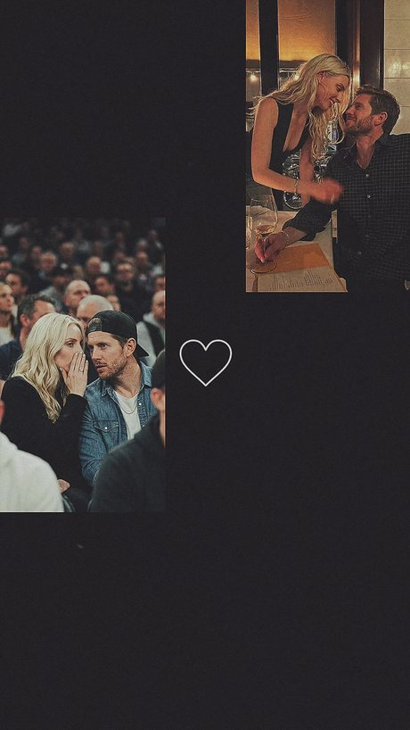
video▶ 26smontagem-04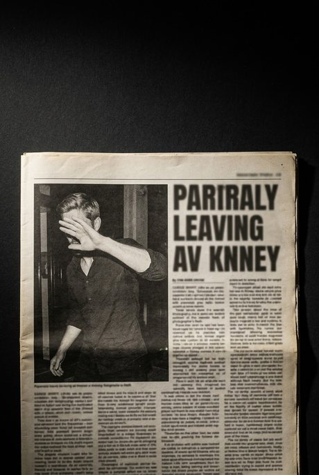
artefatotabloide-01-TESTE artefatotabloide-03-caixa-baixa
artefatotabloide-03-caixa-baixa stillcap01-adam
stillcap01-adam stillcap01-mads
stillcap01-mads stillcap04-adam
stillcap04-adam stillcap04-mads
stillcap04-mads stillcap07-adam
stillcap07-adam stillcap07-mads
stillcap07-mads stillcap07b-adam
stillcap07b-adam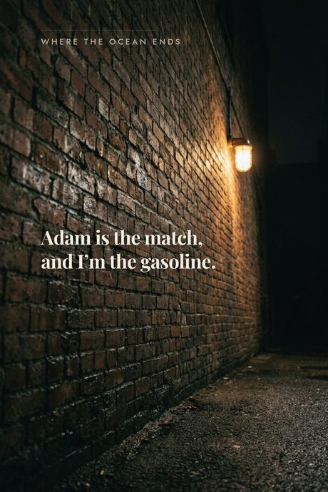
arteAD-beco-parede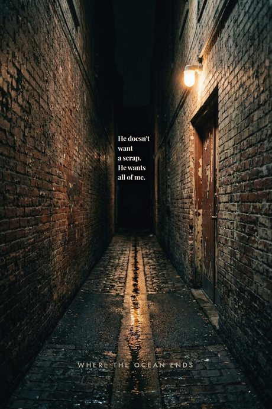
arteAE-beco-show-b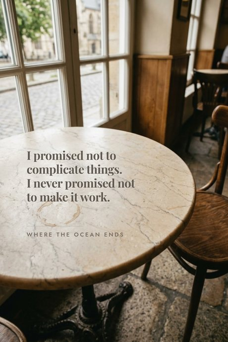
arteAF-cafe-mesa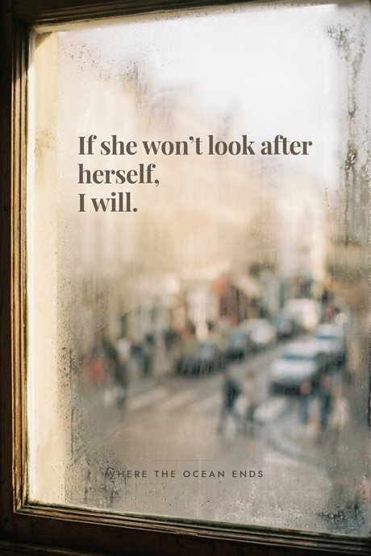
arteAG-cafe-janela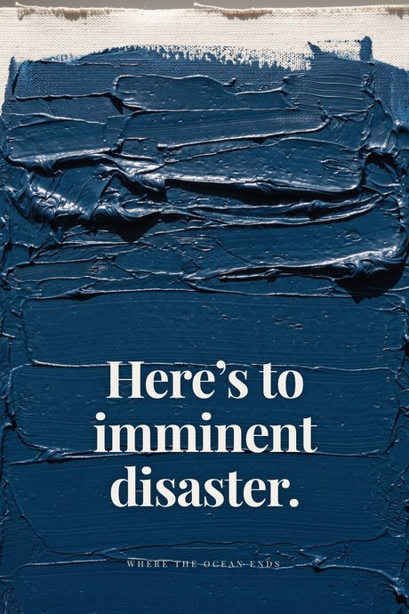
arteE-tinta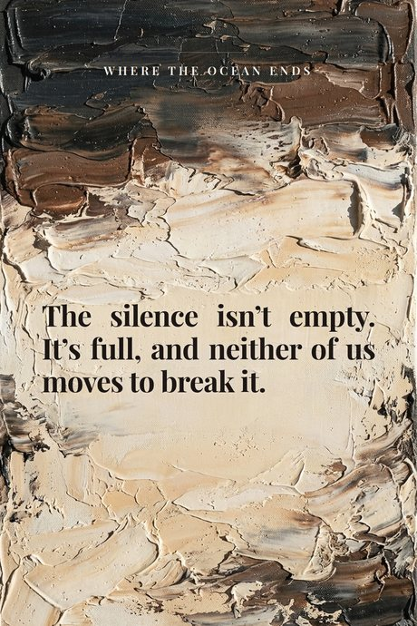
arteF-tinta-clara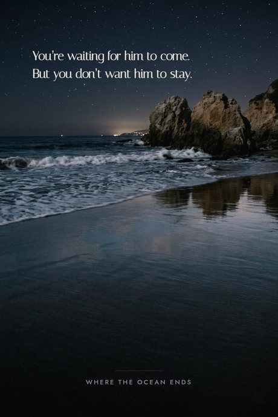
arteI-malibu-agua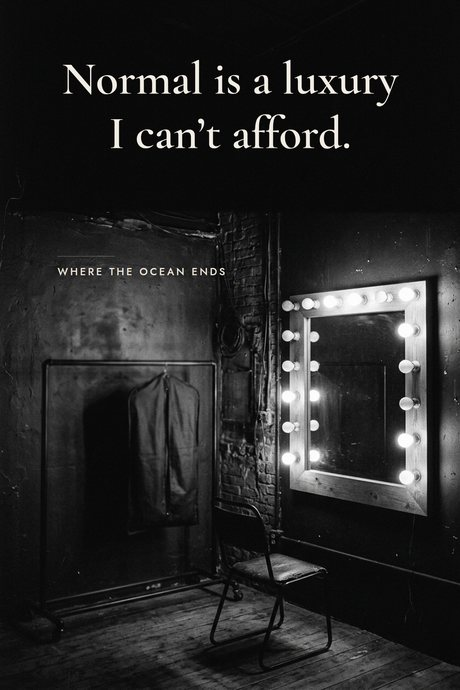
arteJ-camarim arteJ-cartao-de-capitulo
arteJ-cartao-de-capitulo arteJ-cartao-madeleine
arteJ-cartao-madeleine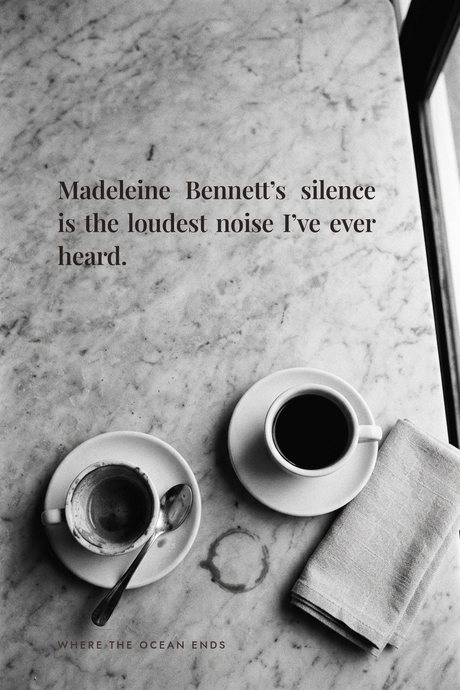
arteL-xicaras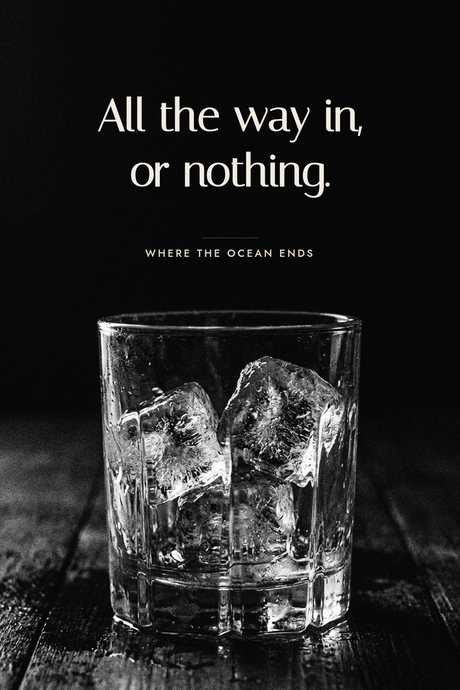
arteM-gelo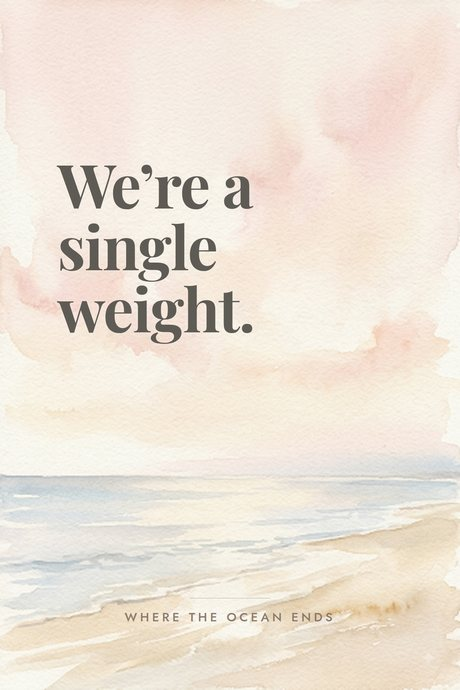
arteR-praia-rosa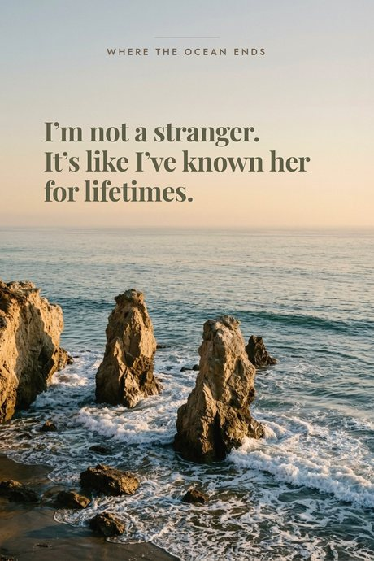
arteS-malibu-ouro-a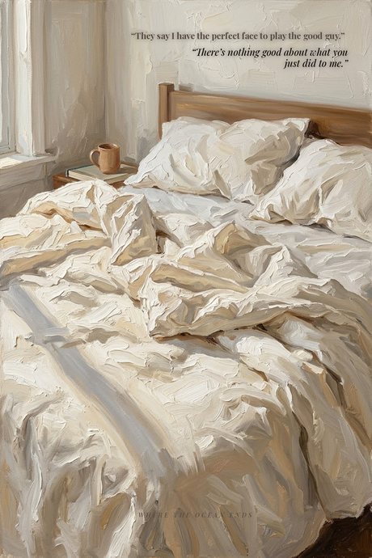
arteT-dialogo-bom-moco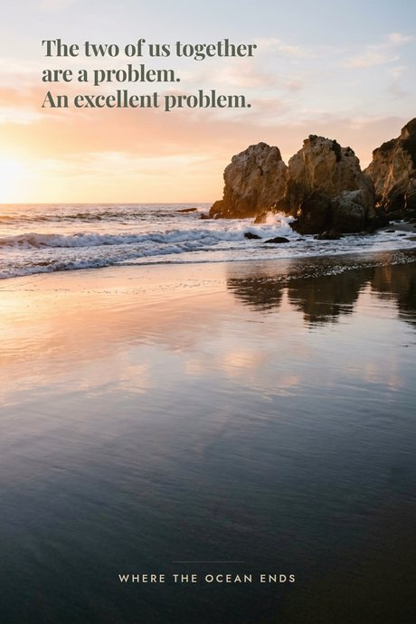
arteT-malibu-ouro-b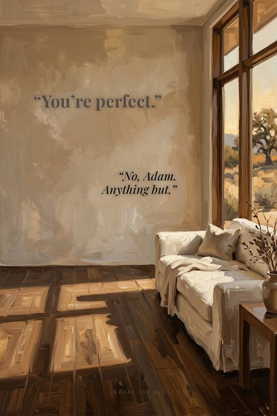
arteU-dialogo-perfeita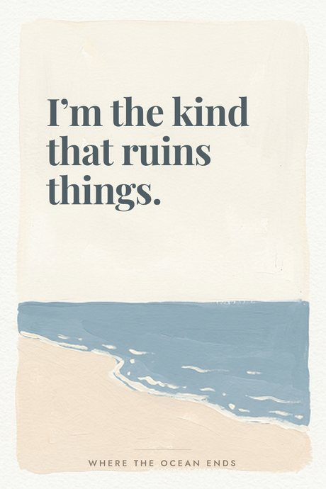
arteU-praia-guache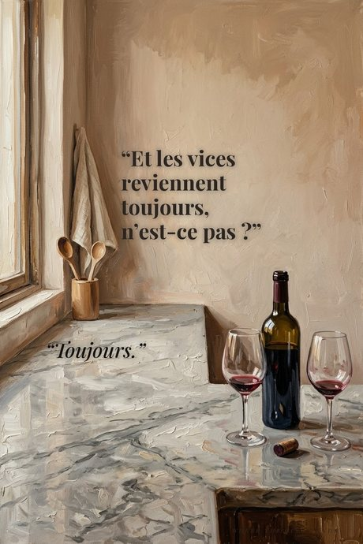
arteV-dialogo-toujours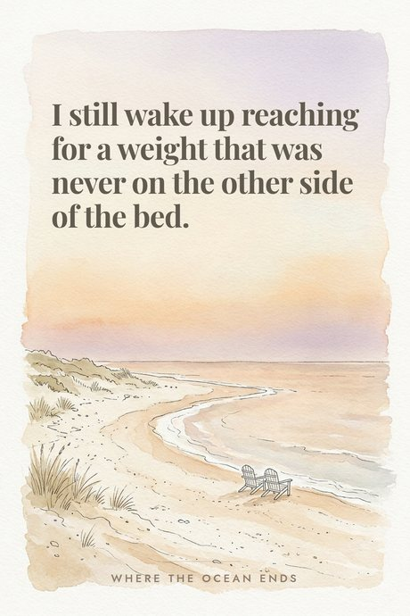
arteW-praia-cadeiras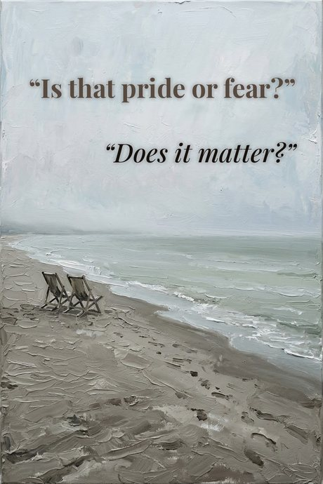
arteZ-dialogo-zylah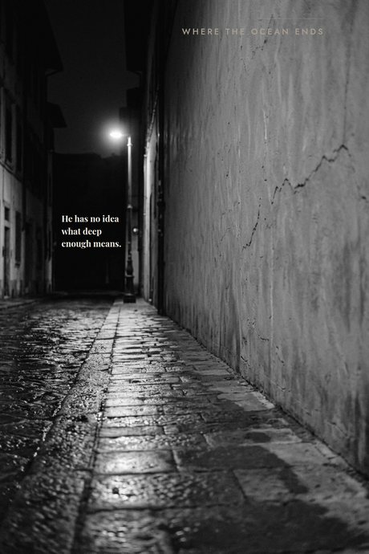
arteZ-rua-esquina-b artemockup-livro-01
artemockup-livro-01 fotoadam-armchair-phone
fotoadam-armchair-phone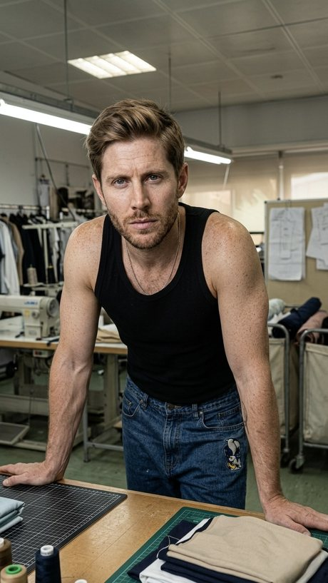
fotoadam-atelie fotoadam-mads-cafe-smoke-a
fotoadam-mads-cafe-smoke-a fotoadam-mads-cafe-smoke-b
fotoadam-mads-cafe-smoke-b fotoadam-mads-europe-street
fotoadam-mads-europe-street fotoadam-mads-smoothies
fotoadam-mads-smoothies fotoadam-mirror-selfie
fotoadam-mirror-selfie fotoadam-polo-arms-crossed
fotoadam-polo-arms-crossed fotoadam-pool-tattoo
fotoadam-pool-tattoo fotoadam-white-shirt-papers
fotoadam-white-shirt-papers fotocasal-restaurante
fotocasal-restaurante fotomads-coat-sidewalk-night
fotomads-coat-sidewalk-night fotomads-mesh-panel
fotomads-mesh-panel fotomads-navy-pinstripe-portrait
fotomads-navy-pinstripe-portrait fotomads-red-carpet-slip
fotomads-red-carpet-slip fotomads-retrato-escuro
fotomads-retrato-escurojá estão no site, mas sem fila 32
Estas já subiram para pins/ — o robô consegue publicar hoje, e ninguém escreveu a linha da fila. É o estoque mais rápido que existe.
 fotoadam-ballgame-cap
fotoadam-ballgame-cap fotoadam-guitar-kitchen
fotoadam-guitar-kitchen fotoadam-hoodie-cobbles
fotoadam-hoodie-cobbles fotoadam-lago
fotoadam-lago fotoadam-mads-car-almost
fotoadam-mads-car-almost fotoadam-mads-opera-box
fotoadam-mads-opera-box fotoadam-mads-press-portrait
fotoadam-mads-press-portrait fotoadam-mads-red-bag-a
fotoadam-mads-red-bag-a fotoadam-mads-red-bag-b
fotoadam-mads-red-bag-b fotoadam-mads-red-bag-c
fotoadam-mads-red-bag-c fotoadam-mads-snow-hands
fotoadam-mads-snow-hands fotoadam-mads-sunny-sidewalk
fotoadam-mads-sunny-sidewalk fotoadam-mads-umbrella-rain
fotoadam-mads-umbrella-rain fotoadam-parede-concreto
fotoadam-parede-concreto fotoadam-polo-daylight
fotoadam-polo-daylight fotoadam-studio-dark
fotoadam-studio-dark fotoadam-suede-jacket
fotoadam-suede-jacket fotoadam-venice-boat
fotoadam-venice-boat artedialogue-anything-but
artedialogue-anything-but artedialogue-does-it-matter
artedialogue-does-it-matter artedialogue-good-guy
artedialogue-good-guy artedialogue-not-even-close
artedialogue-not-even-close artedialogue-toujours
artedialogue-toujours fotomads-chapeu-pele
fotomads-chapeu-pele fotomads-closet-shoulder
fotomads-closet-shoulder fotomads-jacket-boots
fotomads-jacket-boots fotomads-long-coat
fotomads-long-coat fotomads-neon-hair
fotomads-neon-hair fotomads-night-slit
fotomads-night-slit stillstill-anything-but
stillstill-anything-but stillstill-toujours
stillstill-toujoursmatéria-prima 19
Não são peças. Mockup cru, zona de texto e capa existem para virar outra coisa — o mockup só vai ao ar com o texto por cima, então ele não é trabalho pendente, é insumo.
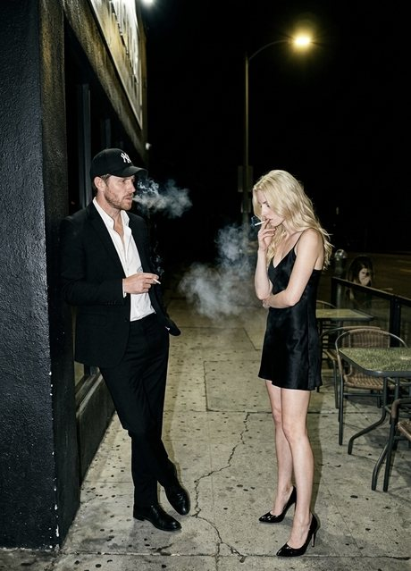
zonacalcada-noite-LIMPA capacapa-01-serif
capacapa-01-serif capacapa-02-script-preto
capacapa-02-script-preto capacapa-03-script-azul
capacapa-03-script-azul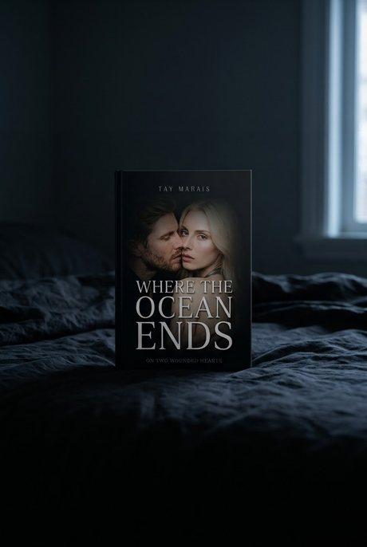
mockupmockup-cama-janela mockupmockup-lencol-alto
mockupmockup-lencol-alto mockupmockup-madeira-base
mockupmockup-madeira-base mockupmockup-marmore-reflexo
mockupmockup-marmore-reflexo mockupmockup-molhado-reflexo
mockupmockup-molhado-reflexo zonapraia-noite-LIMPA
zonapraia-noite-LIMPA zonavague-madeleine-LIMPA
zonavague-madeleine-LIMPAnão é Pinterest 8
Coisa do site e da marca: paleta, formulário, foto de perfil. Está aqui para você achar quando precisar, e para ninguém mandar por engano para uma fila de pin.
 arteform-arc-en
arteform-arc-en arteform-arc-pt
arteform-arc-pt artefoto-perfil-2026
artefoto-perfil-2026 artefoto-perfil-2026-escuro
artefoto-perfil-2026-escuro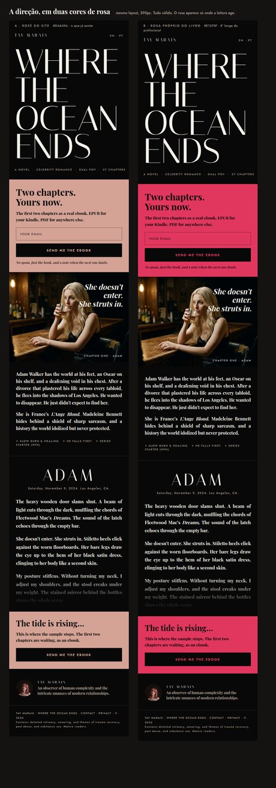
artelp-direcao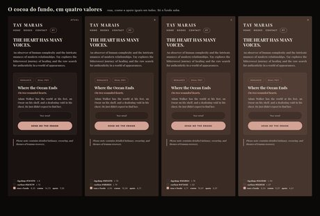
artepaleta-site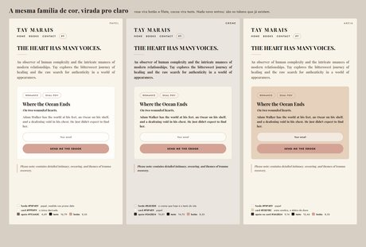
artepaleta-site-claraA grade como vai ficar
Mais novo em cima, do jeito que a aba Criados desenha — a ordem é o inverso da fila. As duas filas aparecem juntas: a promo sai aos sábados e não toma a vaga da narrativa. Conflito vem marcado na própria fileira, não numa aba à parte.
ainda vai sair na ordem em que vai aparecer no feed — mais novo em cima, com a data projetada de cada fileira
 fotoadam-cliff-black-tee
fotoadam-cliff-black-tee artequote-a-single-weight
artequote-a-single-weight fotoadam-paris-balcony
fotoadam-paris-balcony fotomads-mirror-selfie
fotomads-mirror-selfie artequote-the-kind-that-ruins
artequote-the-kind-that-ruins fotomads-blazer-gold-cuff
fotomads-blazer-gold-cuff artequote-it-isnt-rough
artequote-it-isnt-rough fotoadam-mads-street-standoff
fotoadam-mads-street-standoff artequote-no-mark
artequote-no-mark fotoadam-airport-navy
fotoadam-airport-navy artequote-this-isnt-my-hideout
artequote-this-isnt-my-hideout fotoadam-cannes
fotoadam-cannes artequote-nobody-knows-where-i-am
artequote-nobody-knows-where-i-am fotoadam-mads-white-wall
fotoadam-mads-white-wall artequote-deep-enough
artequote-deep-enough fotomads-martini-skyline
fotomads-martini-skyline artequote-the-truth-would-destroy-us
artequote-the-truth-would-destroy-us fotomads-pinstripe-boots
fotomads-pinstripe-boots artequote-match-and-gasoline
artequote-match-and-gasoline fotoadam-mads-times-square
fotoadam-mads-times-square artequote-he-wants-all-of-me
artequote-he-wants-all-of-me fotoadam-tattoo-sunset
fotoadam-tattoo-sunset artequote-pulling-me-under
artequote-pulling-me-under fotoadam-carpet-grey-suit
fotoadam-carpet-grey-suit artequote-never-promised
artequote-never-promised fotoadam-mads-snow-street
fotoadam-mads-snow-street artequote-if-she-wont-i-will
artequote-if-she-wont-i-will fotomads-carpet-pink-gown
fotomads-carpet-pink-gown artequote-a-weight-that-was-never-there
artequote-a-weight-that-was-never-there fotomads-window-black-dress
fotomads-window-black-dress artequote-letting-me-breathe
artequote-letting-me-breathe stillstill-the-good-guy
stillstill-the-good-guy artequote-flammable
artequote-flammable artequote-i-run-from-good-things
artequote-i-run-from-good-things fotoadam-mads-crowd-back
fotoadam-mads-crowd-back artequote-i-only-held-the-pencil
artequote-i-only-held-the-pencil promopromo-livro-peitoril
promopromo-livro-peitoril promopromo-casal-xadrez
promopromo-casal-xadrez promopromo-livro-cama
promopromo-livro-cama artedialogue-not-exactly
artedialogue-not-exactly stillstill-not-even-close
stillstill-not-even-close artedialogue-did-you-find-me
artedialogue-did-you-find-me fotoadam-brooklyn
fotoadam-brooklyn artequote-empty-sheets
artequote-empty-sheets fotoadam-beach-sunglasses
fotoadam-beach-sunglasses artequote-all-the-way-in
artequote-all-the-way-in fotoadam-mads-cap-cigarette
fotoadam-mads-cap-cigarette artequote-ruined-me-for-anyone-else
artequote-ruined-me-for-anyone-else promopromo-livro-preta-c
promopromo-livro-preta-c promopromo-casal-calcada
promopromo-casal-calcada fotoadam-suit-concrete
fotoadam-suit-concrete artequote-a-bridge-or-a-trap
artequote-a-bridge-or-a-trap fotomads-dark-portrait
fotomads-dark-portrait artequote-tearing-through-skin
artequote-tearing-through-skin fotoadam-mads-sidewalk-table
fotoadam-mads-sidewalk-table artequote-normal-is-a-luxury
artequote-normal-is-a-luxuryjá está no ar
 promopromo-livro-madeira
promopromo-livro-madeira promopromo-casal-praia
promopromo-casal-praia promopromo-livro-cafe
promopromo-livro-cafe fotomads-event-lights
fotomads-event-lights artequote-not-the-center-of-attention
artequote-not-the-center-of-attention fotoadam-atelier
fotoadam-atelier artequote-comfort-is-dangerous
artequote-comfort-is-dangerous fotoadam-mads-black-tie
fotoadam-mads-black-tie artequote-loudest-noise
artequote-loudest-noise artequote-madeleine-is-the-ocean
artequote-madeleine-is-the-ocean fotoadam-mads-restaurant
fotoadam-mads-restaurant artequote-ocean-never-lets-anyone-in
artequote-ocean-never-lets-anyone-in artequote-known-her-for-lifetimes
artequote-known-her-for-lifetimes artequote-an-excellent-problem
artequote-an-excellent-problem fotomads-paris-street
fotomads-paris-street artequote-same-man-twice
artequote-same-man-twice fotoadam-closet-white-shirt
fotoadam-closet-white-shirt artequote-waiting-not-staying
artequote-waiting-not-staying fotoadam-mads-gala
fotoadam-mads-gala artequote-body-goes-heart-stays
artequote-body-goes-heart-stays fotomads-black-walk
fotomads-black-walk artequote-silence-not-empty
artequote-silence-not-empty fotoadam-pillar-nightfall
fotoadam-pillar-nightfall artequote-imminent-disaster
artequote-imminent-disaster fotoadam-mads-fire-escape
fotoadam-mads-fire-escape artequote-she-bites
artequote-she-bites fotoadam-photoshoot-fitting
fotoadam-photoshoot-fitting artequote-destruction-mutuelle
artequote-destruction-mutuelle fotomads-studio-portrait
fotomads-studio-portraitTudo que existe
Todas as peças do sistema, uma vez só. É o que impede peça repetida ir para a fila. Filtra por formato e por estado.
arteJ-cartao-de-capituloarteJ-cartao-madeleineartedialogue-anything-butartedialogue-did-you-find-meartedialogue-does-it-matterartedialogue-good-guyartedialogue-not-even-closeartedialogue-not-exactlyartedialogue-toujoursarteform-arc-enarteform-arc-ptartefoto-perfil-2026artefoto-perfil-2026-escuroartemockup-livro-01artequote-a-bridge-or-a-trapartequote-a-single-weightartequote-a-weight-that-was-never-thereartequote-all-the-way-inartequote-an-excellent-problemartequote-body-goes-heart-staysartequote-comfort-is-dangerousartequote-deep-enoughartequote-destruction-mutuelleartequote-empty-sheetsartequote-flammableartequote-he-wants-all-of-meartequote-i-only-held-the-pencilartequote-i-run-from-good-thingsartequote-if-she-wont-i-willartequote-imminent-disasterartequote-it-isnt-roughartequote-known-her-for-lifetimesartequote-letting-me-breatheartequote-loudest-noiseartequote-madeleine-is-the-oceanartequote-match-and-gasolineartequote-never-promisedartequote-no-markartequote-nobody-knows-where-i-amartequote-normal-is-a-luxuryartequote-not-the-center-of-attentionartequote-ocean-never-lets-anyone-inartequote-pulling-me-underartequote-ruined-me-for-anyone-elseartequote-same-man-twiceartequote-she-bitesartequote-silence-not-emptyartequote-tearing-through-skinartequote-the-kind-that-ruinsartequote-the-truth-would-destroy-usartequote-this-isnt-my-hideoutartequote-waiting-not-stayingartefatotabloide-03-caixa-baixacapacapa-01-serifcapacapa-02-script-pretocapacapa-03-script-azulfotoadam-airport-navyfotoadam-armchair-phonefotoadam-atelierfotoadam-ballgame-capfotoadam-beach-sunglassesfotoadam-brooklynfotoadam-cannesfotoadam-carpet-grey-suitfotoadam-cliff-black-teefotoadam-closet-white-shirtfotoadam-guitar-kitchenfotoadam-hoodie-cobblesfotoadam-lagofotoadam-mads-black-tiefotoadam-mads-cafe-smoke-afotoadam-mads-cafe-smoke-bfotoadam-mads-cap-cigarettefotoadam-mads-car-almostfotoadam-mads-crowd-backfotoadam-mads-europe-streetfotoadam-mads-fire-escapefotoadam-mads-galafotoadam-mads-opera-boxfotoadam-mads-press-portraitfotoadam-mads-red-bag-afotoadam-mads-red-bag-bfotoadam-mads-red-bag-cfotoadam-mads-restaurantfotoadam-mads-sidewalk-tablefotoadam-mads-smoothiesfotoadam-mads-snow-handsfotoadam-mads-snow-streetfotoadam-mads-street-standofffotoadam-mads-sunny-sidewalkfotoadam-mads-times-squarefotoadam-mads-umbrella-rainfotoadam-mads-white-wallfotoadam-mirror-selfiefotoadam-parede-concretofotoadam-paris-balconyfotoadam-photoshoot-fittingfotoadam-pillar-nightfallfotoadam-polo-arms-crossedfotoadam-polo-daylightfotoadam-pool-tattoofotoadam-studio-darkfotoadam-suede-jacketfotoadam-suit-concretefotoadam-tattoo-sunsetfotoadam-venice-boatfotoadam-white-shirt-papersfotocasal-restaurantefotomads-black-walkfotomads-blazer-gold-cufffotomads-carpet-pink-gownfotomads-chapeu-pelefotomads-closet-shoulderfotomads-coat-sidewalk-nightfotomads-dark-portraitfotomads-event-lightsfotomads-jacket-bootsfotomads-long-coatfotomads-martini-skylinefotomads-mesh-panelfotomads-mirror-selfiefotomads-navy-pinstripe-portraitfotomads-neon-hairfotomads-night-slitfotomads-paris-streetfotomads-pinstripe-bootsfotomads-red-carpet-slipfotomads-retrato-escurofotomads-studio-portraitfotomads-window-black-dressmockupmockup-lencol-altomockupmockup-madeira-basemockupmockup-marmore-reflexomockupmockup-molhado-reflexopromoF1-livro-esqpromoF2-livro-esqpromoF3-livro-dirpromoF3-livro-esqpromocta-calcadapromocta-praiapromolivro-lencolpromolivro-madeira-basepromopromo-casal-calcadapromopromo-casal-praiapromopromo-casal-xadrezpromopromo-livro-cafepromopromo-livro-camapromopromo-livro-madeirapromopromo-livro-peitorilpromopromo-livro-preta-cstillcap01-adamstillcap01-madsstillcap04-adamstillcap04-madsstillcap07-adamstillcap07-madsstillcap07b-adamstillstill-anything-butstillstill-not-even-closestillstill-the-good-guystillstill-toujourszonapraia-noite-LIMPAzonavague-madeleine-LIMPA